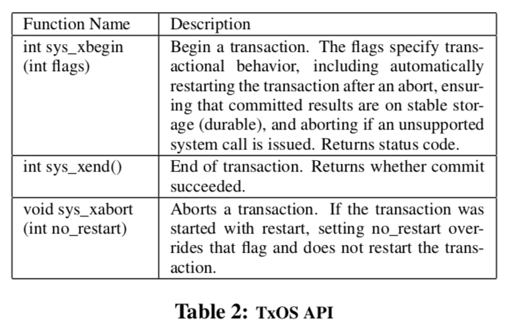
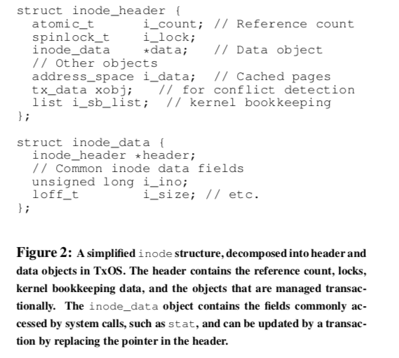
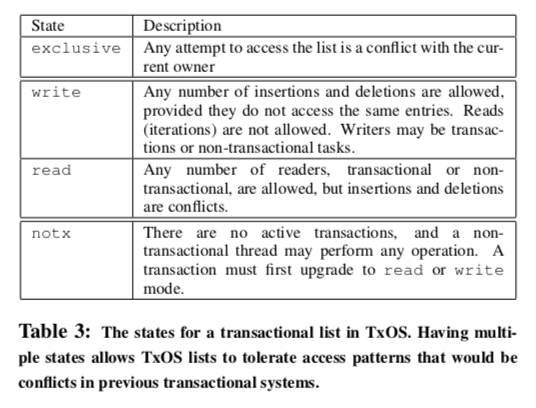
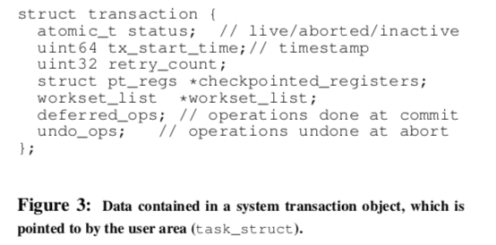
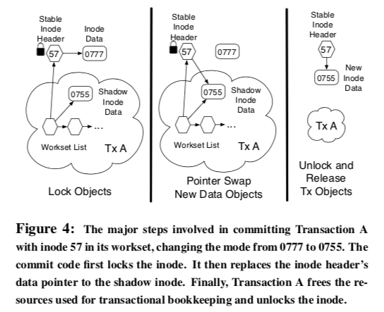

"Operating System Transactions"
Problem
How to implement transaction with ACID guarantee in OS to provide concurrency control?
Background
-
Problems that can be solved by using transactions:
- Security vulnerbilities in the file system that are caused by time-of-check-to-time-of-use (TOCTTOU) race conditions
- Unsuccessful software installation is hard to roll back without disturbing concurrent, independent updates to the file system
- Consistency problem in managing local user accounts
- Have to use a database for concurrency management and crash consistency, which lead to more complex application code and system administration
System Design
Overview
- System transactions allow programmers to group accesses to system resources into logical units that are executed with ACID guarantee
- Use
sys_xbegin()andsys_xend()to wrap around code regions with consistency constraints - Use
sys_xabort()to abort in-progress transaction - Access and modify to system resources are kept isolated until commit time

System transactions
- System transactions provide ACID semantics for updates to OS resources (e.g., files, pipes, and signals)
- OS is responsible for ensuring that transactional & non-transactional access to system state are correctly serialized and contention is arbitrated fairly
-
To ensure isolation, kernel enforces the invariant that a kernel object may only have one writer at a time (except containers)
- Concurrent system transactions that modify the same kernel object cannot commit (i.e., one of them has to abort)
- Non-transactional updates to objects read or written by an active system transaction are also forbidden
-
Durability is optional (for performance concern)
- Provides strong isolation: serialization of transactional and non-transactional updates to the same resources
- OS always chooses the same transaction to restart when hit the conflict that involves the same transactions (to prevent livelock)
- ACID is guaranteed for system state, not application state
- Communication outside of a trasnaction violates isolation and thus not supported (e.g., IPC between a thread executing a system transaction and a non-transactional thread)
- Communication among threads within the same transaction is unrestricted
TxOS
Design
-
High-level overview:
- Application updates usually go to OS buffer first; copy-on-write these buffers for transactions to support isolation
- Transactional updates to kernel data structures are supported through object-based software transactional memory systems
- Isolation mechanism is optimistic: assume conflicts are rare
-
Interoperability and fairness
- TxOS prvoides strong isolation inside the kernel by requiring all system calls to follow the same locking discipline and transactions need to anonotate accessed kernel objects (all threads, whether transactional or not, need to check for conflict on 1st time access)
- Scheduler can maintain fairness between non-transactional and transactional threads b/c conflict is detected before threads entering a critical region and suspension of non-transactional thread is possible
-
Managing transactional state
- Lazy version management: transactions operate on private copies of a data structure (vs. eager version management: in-place data update + undo log)
- TxOS holds lock only to make a private copy of the data structure (enforcing global ordering of kernel locks avoid deadlock)
- Commit latency is challenge for lazy version management: TxOS minimizes this overhead by splitting objects, tunning a
memcpyof the entire object into a pointer copy
-
TxOS provides transaction to system states; User-level transactional memory (TM) system provides transaction to application states (integrate together to provide a complete transactional programming model)
Implementation
-
Versioning data:
- TxOS maintains multiple versions of kernel data structures to isolate the system calls effect until transactions commit and easy abort
-
Split objects into header and data so that TxOS maintains the invariant: single writer to any object (i.e., concurrent writes must be on disjoint objects) (see Figure 2 below)
- Object header contains a pointer to object's data; transactions commit changes to an object by replacing this pointer in the header to a modified copy of data object
- Header itself is never replaced by a transaction (eliminates the need to update pointers in other objects)
-
Pros:
- No need to recursively update pointers in other objects
- Avoid restarting active transactions tiggered by the kernel garbage collection thread
- Ensure that transactional code always has a speculative object
-
TxOS decomposes an object into multiple data payloads when it houses data that can be accessed disjointly
-
No copies are made for kernel objects that are read-only in transactions
- Writer creates a new object copy when transactional reader reference count is non-zero and install it as new stable version
- Old copy is collected via read-copy update (RCU)

-
Conflict detection and resolution
tx_dataobject (part of transaction-supported kernel objects) contains a pointer to a transactional writer list and a pointer to a transactional reader list (non-null indicates there is an active treansactional writer/reader)- Use locks and test on the transactional writers and readers fileds to detect transactional and asymmetric (conflict involve transaction and non-transaction threads) conflicts
- Selects the process with the higher scheduling priority as the winnder of a conflict (if priority equal, older transaction wins)
- Non-transactional thread is preempted when asymmetric conflict is detected and rescheduled when the conflicting transaction is commited
- Table 3 shows the transactional list state that minimizes the conflicts involving updating linked list data structure

-
Managing transaction state
- Use transaction objects to store metadata and statistics for a transaction; let kernel thread's control block pointing to it
- Transaction status (
status) is checked and updated atomically -
Abort is invoked when conflict is detected during transactional system call:
- Transaction stores register state on the stack at the beginning of the current system call
- On abort, register state is restored and execution is jumped back to the top of kernel stack
-
Need to keep track of deferred operations (done until the commit time) (e.g., free memory, deliver signals, file system monitoring events)
- A workset maintains references to all kernel objects that transaction has made a copy of

-
Commit protocol
- Transaction acquires locks for all items in its workset
- TxOS iterates over the objects in workset twice: 1) acquire the blocking locks 2) acquire non-blocking locks
- Transaction checks the
statusand see if it can commit - Transaction copies its updates to the stable objects
- Release spinlocks
- Perform deferred operations
- Release mutex

-
Abort protocol
- Release any kernel locks
- Iterate workset and locks each objects to remove any references to itself from the object's transactional state and then unlocks the object
- Transaction frees its shadow objects and decrements the reference count on their stable counterparts
- Release any resources used in transaction (e.g., memory allocation)
-
User-level transactions
-
Commit protocol
- The user prepares a Transaction
- The user requests that the system commit the transaction through
sys_xend() - System commits or aborts
- System communicates the result to user as
sys_xend()return code - User commits or aborts accordingly
-
-
multi-process transactions, and signal delivery can be checked in paper